ESDIRK¶
- class ESDIRK¶
- ESDIRK.__init__(self, T, u, f, g=[], bcs=[], tdf=[], tdfBC=[])¶
- Input:
T: A list with two elements representing the start point and end point of the time integration.
u: Initial condition. Must be a Function-object.
f: List of differential equation components of the system (1) (first
 components). Each component
must be defined as a Form-object. If you are solving a
linear system of PDEs, the right hand side should be defined as the
bilinear/linear forms
components). Each component
must be defined as a Form-object. If you are solving a
linear system of PDEs, the right hand side should be defined as the
bilinear/linear forms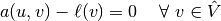
using TestFunction/TrialFunction-objects to define 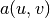 and TestFunction/Function-objects to define 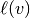, in order for Gryphon to use a linear solver.
If you are solving a nonlinear system of PDEs, the right hand side should be defined as the semilinear form
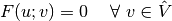
using TestFunction/Function-objects to define 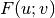, in order for Gryphon to use a nonlinear solver.
g: List of algebraic equation components of (1). Should be defined in the same way as the argument f.
bcs: List of DirichletBC-objects which should be applied to the system.
tdf: If any of the Form-objects corresponding to the right hand side of your PDE system contains functions which are explicitly time dependent, they must be passed to the ESDIRK- constructor via this argument.
tdfBC: If any of the DirichletBC-objects contains functions which are explicitly time dependent, they must be passed to the ESDIRK-constructor via this argument.
The ESDIRK module is designed to solve systems of PDEs which take on the following form
(1)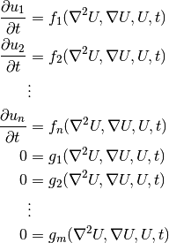
with
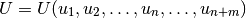
by first applying a finite element method to the spatial components, thus reducing the system of PDEs to either a pure ODE system (if 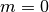) or a DAE system.
Note that the ESDIRK solver only handles index 1 DAEs.
The ODE/DAE system will then be solved by applying an ESDIRK method. The weak form of (1) will amount to the following:
Find
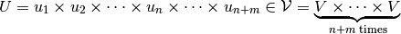
such that
(2)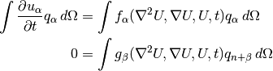
for all
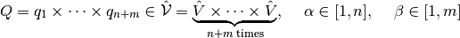
where 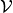 and 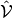 are suitable trial/test spaces. We can approximate (2) by applying a finite element method where we seek an approximation 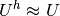 by finding
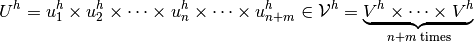
such that
(3)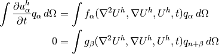
for all
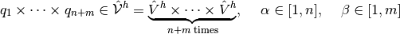
where 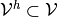 and 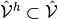 have finite dimension. In the following, we drop the superscript
 on the approximate quantities (except the function spaces)
to make room for time stepping indices. An
on the approximate quantities (except the function spaces)
to make room for time stepping indices. An  -stage ESDIRK
method can be applied to approximate (3) in the
following way:
-stage ESDIRK
method can be applied to approximate (3) in the
following way:Find 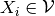 such that [1]:
(4)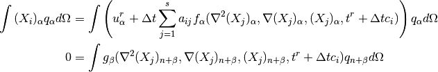
for all
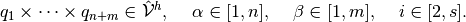
Note that 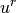 refers to the 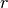-th time step at time 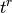. Since the ESDIRK methods implemented in Gryphon are stiffly accurate, the time step update is simply
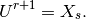
Footnotes
[1] Remember that  has 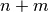 components. We write 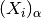 to refer to component 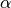 of . These quantities are known as the stage values in Runge-Kutta theory.
has 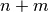 components. We write 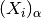 to refer to component 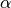 of . These quantities are known as the stage values in Runge-Kutta theory.
- getLinearVariationalForms(B, X)¶
- Input:
- B: Butcher tableau for the selected ESDIRK method.
- X: List of 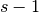 Function-objects which are used to store the stage values.
In the following we assume that we have a problem where 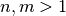. If you are solving a problem with only one ODE-component, the code is slightly different due to the way FEniCS treats Function-objects with one component versus many components. The code is however completely analogous to the below presentation.
This method constructs Form-objects corresponding to the right hand side of (4) when all the functions 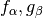 are assumed to be linear. First the method creates copies of the user-supplied time dependent functions (sent via the keyword argument tdf) as such
# Get the number of stage values s = B.shape[0] # Generate copies of time dependent functions self.tdfButcher = [[] for i in range(len(self.tdf))] for j in range(0,len(self.tdf)): for i in range(0,s): if self.tdf[j].__class__.__name__ == "CompiledExpression": self.tdfButcher[j].append(Expression(self.tdf[j].cppcode,t=self.tstart)) else: self.tdfButcher[j].append(self.tdf[j].__class__())
These copies will be needed when the stage derivatives are to be evaluated for the correct time values (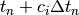). One copy per function per stage value is created.
Next, Form-objects are initialized with the following terms from (4). Note that self.U is a TrialFunction and that everything is moved to the left hand side of the equation.
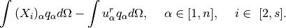
L = [reduce((lambda x,y:x+y),[self.U[alpha]*self.Q[alpha]*dx - self.u[alpha]*self.Q[alpha]*dx for alpha in range(self.n)]) for i in range(s-1)]
Next, the sum over the stage derivatives,
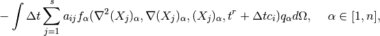
is taken care of by
for alpha in range(0,self.n): for i in range(s-1): R = {} for k in range(0,len(self.tdf)): R[self.tdf[k]] = self.tdfButcher[k][i+1] L[i] -= self.DT*B[1,1]*replace(self.f[alpha],R) for j in range(j+1): R = {} for k in range(0,len(self.tdf)): R[self.tdf[k]] = self.tdfButcher[k][j] L[i] -= self.DT*B[i+1,j]*action(replace(self.f[alpha],R),X[j])
Note that the last term in the sum is defined via a TrialFunction in order to make it a part of the bilinear form . The rest of the sum is made a part of the linear form by using the action-function. Finally, the algebraic equations,
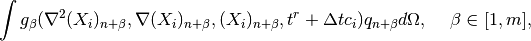
are added by
for beta in range(self.m): for i in range(s-1): R = {} for k in range(len(self.tdf)): R[self.tdf[k]] = self.tdfButcher[k][i+1] L[i] += replace(self.g[beta],R)
The purpose of the dictionary R is to make sure that any explicit time dependent functions are evaluated in the correct points in time by substituting in the copies created in the beginning.
To sum up, we now have Form-objects on the form
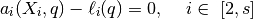
where
![a_i(X_i,q) &= \begin{bmatrix}\displaystyle \int{\left((X_i)_\alpha -\Delta t a_{is} f_\alpha(\nabla^2 X_{s,\alpha}, \nabla X_{s,\alpha}, X_{s,\alpha}, t^r + \Delta t c_i) \right)q_\alpha d\Omega} \\ \displaystyle \int{g_{\beta}(\nabla^2 (X_i)_{n+\beta}, \nabla (X_i)_{n+\beta}, (X_i)_{n+\beta}, t^r + \Delta t c_i)q_{n+\beta} d\Omega} \end{bmatrix}, \\
\ell_i(q) &= \begin{bmatrix}\displaystyle \int{\left(u_\alpha^r + \Delta t \sum_{j=2} ^{s-1} a_{ij} f_\alpha(\nabla^2 (X_j)_\alpha , \nabla (X_j)_\alpha , (X_j)_\alpha , t^r + \Delta t c_i)\right)q_\alpha d\Omega} \\ 0 \end{bmatrix}, \hspace{5mm} \alpha \in [1,n] \hspace{5mm} \beta \in [1,m].](_images/math/260015b6444aea81997bfb09d6a6ff32d7cbfba4.png)
These forms can now be handled by the linear solvers included in the FEniCS framework. Note that, when expanded, the functions 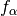 and 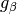 may contain terms which belong in the linear form 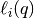. Gryphon will take care of this automatically.
- getNonlinearVariationalForms(B, X)¶
- Input:
- B: Butcher tableau for the selected ESDIRK method.
- X: List of Function-objects which are used to store the stage values.
In the following we assume that we have a problem where . If you are solving a problem with only one ODE-component, the code is slightly different due to the way FEniCS treats Function-objects with one component versus many components. The code is however completely analogous to the below presentation.
This method constructs Form-objects corresponding to the right hand side of (4) when all the functions are assumed to be nonlinear. First the method creates copies of the user-supplied time dependent functions (sent via the keyword argument tdf) as such
# Get the number of stage values s = B.shape[0] # Generate copies of time dependent functions self.tdfButcher = [[] for i in range(len(self.tdf))] for j in range(0,len(self.tdf)): for i in range(0,s): if self.tdf[j].__class__.__name__ == "CompiledExpression": self.tdfButcher[j].append(Expression(self.tdf[j].cppcode,t=self.tstart)) else: self.tdfButcher[j].append(self.tdf[j].__class__())
These copies will be needed when the stage derivatives are to be evaluated for the correct time values (). One copy per function per stage value is created.
Next, Form-objects are initialized with the following terms from (4). Note that everything is moved to the left hand side of the equation.
L = [reduce((lambda x,y:x+y),[self.U[alpha]*self.Q[alpha]*dx - self.u[alpha]*self.Q[alpha]*dx for alpha in range(self.n)]) for i in range(s-1)]
Next, the sum over the stage derivatives,
![-\int{\Delta t \sum_{j=1} ^s a_{ij} f_\alpha(\nabla^2 (X_j)_\alpha, \nabla (X_j)_\alpha, (X_j)_\alpha, t^r + \Delta t c_i)q_\alpha d\Omega}, \hspace{5mm} \alpha \in [1,n],](_images/math/b3a8347cc72a88e71a4024b3028c060315bdf386.png)
is taken care of by
# Add differential equations L = [reduce((lambda x,y:x+y),[X[j+1][D]*self.Q[D]*dx - self.u[D]*self.Q[D]*dx for D in range(self.n)]) for j in range(s-1)] for D in range(self.n): for i in range(s-1): for j in range(s): replaceDict = {self.u:X[j]} for k in range(len(self.tdf)): replaceDict[self.tdf[k]] = self.tdfButcher[k][j] L[i] -= self.DT*B[i+1,j]*replace(self.f[D],replaceDict)
Finally, the algebraic equations,
are added by
# Add algebraic equations for D in range(self.m): for i in range(s-1): replaceDict = {self.u:X[i+1]} for k in range(len(self.tdf)): replaceDict[self.tdf[k]] = self.tdfButcher[k][i+1] L[i] += replace(self.g[D],{self.u:X[i+1]})
- solve()¶
The solve-method is responsible for both initializing and performing the timestepping process. The code will be explained in its entirety below.
First, record the CPU/wall time by using the built-in Python library time
cpustart = time.clock() wallclockstart = time.time() self.timestepTimer = 0.0
The variable self.iterationTimer will be used to time a single time step and will be used to estimate the remaining run-time of the program. Next, fetch user specified options from the parameter-object
self.updateParameters() stepsizeselector = self.stepsizeselector[self.parameters['timestepping']['stepsizeselector']]
Note that self.stepsizeselector is a dictionary containing function handles to the available step size selectors. It is defined in the class gryphon_toolbox(). This class also contains the method updateParameters().
Next, the Butcher table corresponding to the desired method is loaded by
B = getTable(self.parameters['method']) s = B['tableau'].shape[0]
A list of Function-objects is created for storing the stage values
X = [Function(self.u) for i in range(s)]
before the correct variational forms are loaded
if self.linear: l = self.getLinearVariationalForms(B['tableau'],X) p = [linearESDIRK(lhs(l[j]),rhs(l[j]),self.bcs,self.solver) for j in range(s-1)] else: l = self.getNonlinearVariationalForms(B['tableau'],X) a = [derivative(l[i],X[i+1],self.U) for i in range(s-1)] p = [nonlinearESDIRK(a[i],l[i],self.bcs,XJ) for i in range(s-1)]
For details, check getLinearVariationalForms(), getNonlinearVariationalForms(), linearESDIRK() and nonlinearESDIRK(). Initialization of plotting/ saving of function(s) is performed by calling
self.figureHandling(Init=True)
We now enter the time stepping loop. It starts by recording the wall time at the beginning of the time step and then updates the first (explicit) stage value
while True: timestepStart = time.time() # Explicit first stage X[0].vector()[:] = self.u.vector()[:]
The number of stages to compute is then determined. If the user wants to use adaptive step size selection, all the stages must be computed in order to form the estimate for the local error. If the user wants to use fixed step size, on the other hand, only the stages contributing to the advancing method needs to be computed. As an example, if the user selects ESDIRK43b which in total is a 5 stage method where stage 4 is used as advancing method, stage 5 will never be computed.
if self.parameters['timestepping']['adaptive']: S = s-1 elif not self.parameters['timestepping']['adaptive']: S = B['advSt']
The following code is executed if the user has flagged for inconsistent initial data
if self.parameters['timestepping']['inconsistent_initialdata'] and (self.nAcc + self.nRej) == 0: initdt = self.dt self.dt = self.dtmin self.DT.assign(self.dtmin) elif self.parameters['timestepping']['inconsistent_initialdata'] and (self.nAcc + self.nRej) == 1: self.dt = initdt self.DT.assign(initdt)
Functions which depend explicitly on the variable
 is
updated to 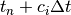.
Note that 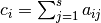.
is
updated to 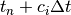.
Note that 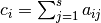.for i in range(len(self.tdfButcher)): for j in range(0,S): self.tdfButcher[i][j].t = self.t + sum(B['tableau'][j,:])*self.dt for j in range(0,S): for F in self.tdfBC: F.t = self.t + sum(B['tableau'][j+1,:])*self.dt
Next, the implicit stages are solved by calling either the linear or the nonlinear solver
for j in range(0,S): if self.linear: p[j].solve(X[j+1].vector()) else: self.solver.solve(p[j],X[j+1].vector())
If the user is using adaptive step size selection, the following code is executed
if self.parameters['timestepping']['adaptive']: le = norm(X[s-1].vector() - X[s-2].vector(),'l2') if self.acceptStep(le,X[B['advSt']]): self.u.vector()[:] = X[B['advSt']].vector()[:] if not self.breakTimeLoop: self.accepted_steps.append(self.dt) self.t += self.dt self.nAcc += 1 stepAccepted = True self.consecutive_rejects = 0 if self.parameters['verbose']: self.printProgress(self.estimateRuntime) else: self.nRej += 1 self.consecutive_rejects += 1 stepAccepted = False self.stepRejected = True self.rejected_steps[0].append(self.t+self.dt) self.rejected_steps[1].append(self.dt) if self.parameters['verbose']: self.printProgress(rejectedStep=True)
First, the local error is calculated and sent to acceptStep() in order to verify whether or not to accept the current step. If it should be accepted, self.u is updated, the current step size is recorded (except for the last step since it may be artificially short if the previous step was close to the end of the time domain), and some flags used for the step size selectors are set.
If the user is using constant step size, the following code is executed
elif not self.parameters['timestepping']['adaptive']: self.u.vector()[:] = X[B['advSt']].vector()[:] self.t += self.dt if self.parameters['verbose']: self.printProgress(self.estimateRuntime)For more details, check dtGustafsson(), dtStandard() and printProgress(). Next, plots are updated and/or saved by calling
self.figureHandling(Update=True)
before a new stepsize is selected by
if self.parameters['timestepping']['adaptive']: try: stepsizeselector(le,B['order'],stepAccepted) except ZeroDivisionError: terminateReason = "StationarySolution" break
If the stepsize selector fails with a ZeroDivisionError, it is because the local error estimated in that time step is zero machine precision. The program will then terminate with some informative output to the user.
If the time step was selected successfully, it is verified by calling
self.verifyStepSize()
before the run-time of the current timestep iteration is recorded by
self.timestepTimer = time.time() - timestepStart
This marks the end of the time stepping loop. For more details, see verifyStepSize(). Finally the program sums up the number of function/Jacobian assemblies (if a NewtonSolver was used), records the total run-time of the solve()-method and then sends it to generateOutput() in order to produce the desired output specified by the user.
self.cputime = time.clock() - cpustart self.walltime = time.time() - wallclockstart if not self.linear: for i in range(len(p)): self.Feval += p[i].Feval self.Jeval += p[i].Jeval self.generateOutput(terminateReason)
- estimateRuntime()¶
This method gives a rough estimate for the remaining run time of the program. The estimate is calculated in the following way:
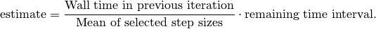
The estimate is printed to screen if the parameter
solverObject.parameters['verbose'] = True
and the time stepping process has advanced more than 1% into the domain.
Support classes¶
- class nonlinearESDIRK(NonlinearProblem)¶
This class is required for FEniCS to work with nonlinear problems. It must contain a method for evaluating the semilinear form 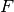 corresponding to the nonlinear variational problem
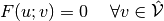
as well as the Jacobian. These methods are named F() and J(). The code for the class is shown in its entirety below.
class nonlinearESDIRK(NonlinearProblem): def __init__(self, a, l, bcs): NonlinearProblem.__init__(self) self.a = a self.l = l self.bcs = bcs self.Jeval = 0 self.Feval = 0 def F(self, b, x): self.Feval += 1 assemble(self.l,tensor=b) for i in self.bcs: i.apply(b,x) def J(self, A, x): self.Jeval += 1 assemble(self.a,tensor=A) for i in self.bcs: i.apply(A)
- class linearESDIRK¶
The purpose of this class is to act as a wrapper for the linear variational forms corresponding to each stage value when solving a system of linear PDEs. The class contains a bilinear form and a linear form corresponding to solving
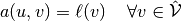
The code for the class is shown in its entirety below.
class linearESDIRK: def __init__(self, a, l, bcs, solver): self.a = a self.l = l self.bcs = bcs self.solver = solver def solve(self,X): A = assemble(self.a) b = assemble(self.l) for i in self.bcs: i.apply(A) i.apply(b) self.solver.solve(A,X,b)